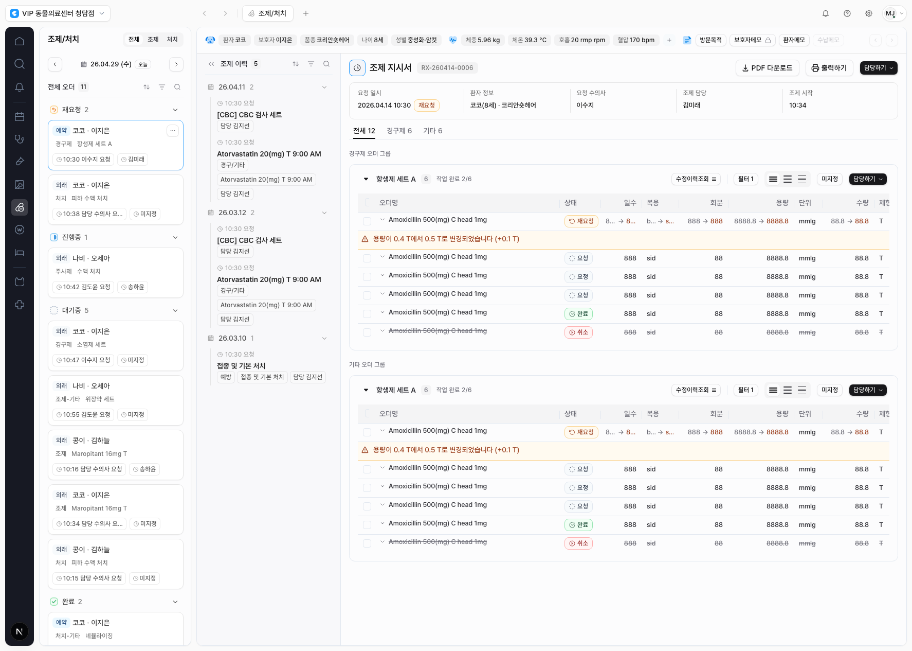
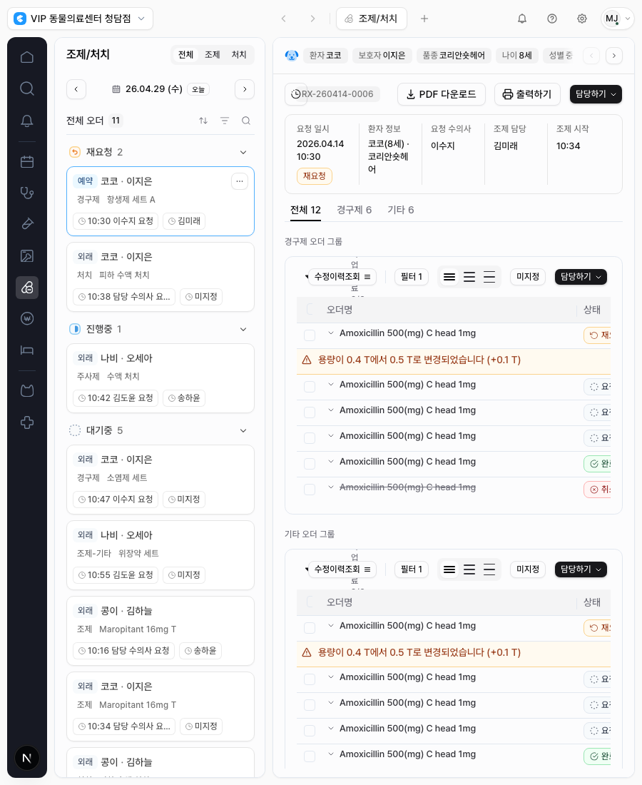

Project 17 · Final Closeout
CLAiR EMR CDS.V2 App Shell Refinement 최종 보고
완료일: 2026-06-01 · 범위: 앱 셸, 네비게이션, 워크스페이스 버튼, 상단 탭/탑바, 왼쪽 사이드바 리스트 타이틀과 task 카드, 환자/문서 정보바, 컨텐츠 사이드바
비개발 요약
이번 작업은 새 화면을 만드는 것이 아니라, 기존 CLAiR EMR app shell을 CDS.V2 Figma 기준에 맞게 더 정돈한 작업이다. 화면의 큰 정보 구조는 유지하면서, 배경색 계층, 네비게이션 폭과 아이콘 크기, 워크스페이스 버튼, 탑바 탭, 사이드바 리스트 타이틀 아이콘, task 카드, 환자/문서 정보바, 컨텐츠 이력 사이드바를 토큰 기반으로 맞췄다.
결과적으로 조제/처치 핵심 화면은 Figma의 shell rhythm에 더 가까워졌고, 하드코딩 대신 기존 token alias를 확장해서 이후 컴포넌트 재사용과 조정이 쉬운 상태가 됐다.
이슈 처리 현황
| Linear | 범위 | 결과 |
|---|---|---|
| DEN-350 | CDS.V2 app shell scope 파악 | 완료 |
| DEN-351 | 앱/사이드/컨텐츠 배경색과 nav command entry | 완료 |
| DEN-352 | 상단 topbar, workspace tabs, chrome controls | 완료 |
| DEN-353 | 사이드바 리스트 타이틀 앞 상태 아이콘 | 완료 |
| DEN-354 | 사이드바 task 카드 구조와 상태 | 완료 |
| DEN-355 | 환자 정보바와 문서/페이지 타이틀 바 | 완료 |
| DEN-356 | 컨텐츠 사이드바와 history card metadata | 완료 |
| DEN-357 | 전체 visual QA와 closeout | 완료 |
핵심 변경
Token Surface
앱 배경은 #FAFAFA, 사이드/워크스페이스 표면은
#FCFCFD, 컨텐츠 패널은 #F8F8FA로 정리했다.
nav, topbar, sidepanel, context bar, content aside 전용 alias token을
추가해 직접 색상값을 반복하지 않게 했다.
Navigation & Workspace
네비바 폭, 패딩, 아이콘 프레임, 검색 버튼 크기, 고객센터 버튼 표시, collapsed/expanded 워크스페이스 버튼 여백을 Figma 컴포넌트 기준으로 맞췄다.
Sidebar Titles & Cards
재요청/진행중/대기중/완료/취소 타이틀 앞에 재사용 가능한
EmrSidePanelStateIcon을 추가했고, task card는 type badge,
patient line, order line, 24px metadata chip 구조로 정리했다.
Context & Content Aside
환자 정보바는 50px 리듬, 문서 정보카드는 72px 리듬으로 맞췄고, 컨텐츠 사이드바는 280px panel, 날짜 아이콘 group title, 세로 timeline, card형 history item으로 맞췄다.
주요 파일
src/styles/tokens/emr-foundation.css: CDS.V2 shell/component alias token 확장src/shell/nav-rail.tsx,src/shell/workspace-switcher.tsx,src/shell/workspace-tabs-bar.tsx: shell chrome 정렬src/components/emr/side-panel-state-icon.tsx: 리스트 타이틀용 상태 아이콘 컴포넌트 추가src/components/emr/side-panel-card.tsx,src/components/emr/order-queue-side-panel.tsx: task card 구조 정리src/components/emr/patient-context-bar.tsx,src/components/emr/page-header.tsx,src/components/emr/instruction-header-stack.tsx: 환자/문서 바 정리src/components/emr/content-aside-panel.tsx,src/components/emr/content-history-list.tsx: 컨텐츠 이력 사이드바 정리tests/app-shell.spec.ts: 토큰/치수/상태 회귀 검증 강화
검증 결과
| 검증 | 결과 | 메모 |
|---|---|---|
npm run lint -- --ignore-pattern '.worktrees/**' |
통과 | error 0개, 기존 warning 5개 |
npx tsc --noEmit |
통과 | 타입 체크 통과 |
npx playwright test tests/app-shell.spec.ts --project=chromium |
통과 | 32개 전체 통과 |
| 데스크톱 visual QA | 통과 | 조제/처치 key flow 기준 캡처 확인 |
| 좁은 viewport 확인 | 주의 | shell/sidebar는 유지되나, 조제/처치 오더 테이블은 고밀도라 별도 responsive 개선 여지가 있음 |
Evidence


리뷰 포인트
- Figma와 비교할 때 네비바 검색 버튼, 고객센터 버튼, workspace 버튼의 크기와 좌우 여백이 의도한 수준인지 확인하면 된다.
- 사이드바 리스트 타이틀의 상태 아이콘과 task card의 type badge-first 구조가 실제 업무 인지에 맞는지 보면 된다.
- 환자 정보바와 문서 정보카드는 기존 정보 구조를 유지하면서 치수/색상 위계를 맞춘 상태다.
- 컨텐츠 사이드바는 Figma 기준의 280px panel, timeline, time icon/card metadata 구조로 맞췄다.
- 조제/처치 오더 테이블 본문은 처음 요청에서 제외한 범위라 디자인 구조를 직접 손대지 않았다.